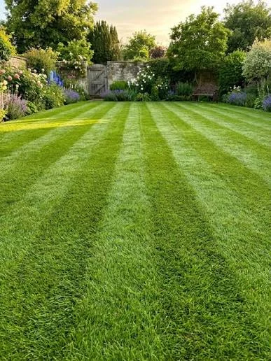
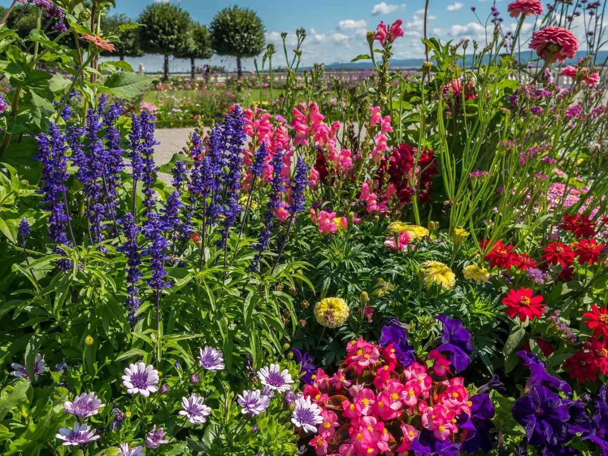

Lawn CareMowing and edging for a neat finish

DRONFIELD · CHESTERFIELD · DERBYSHIRE
A greener garden.
Less hard work.
Friendly, reliable garden maintenance. From lawn mowing and neat hedges to one-off tidy-ups and regular care.
Free online quotesOne-off tidy-upsRegular maintenance
Hedges & ShrubsTrimming, shaping and reductions
Garden Tidy-upsOne-off care for overgrown spaces
Regular CareFortnightly and monthly visits
GARDEN CARE, MADE SIMPLE
Neat lawns.
Happy gardens.
Keep on top of the mowing, weeding and trimming without giving up your spare time. SB Gardening looks after gardens across Dronfield, Chesterfield and the surrounding areas.
See the price guide →

ONE-OFF OR ONGOING
A little care.
A big difference.
Choose a fresh start for an overgrown garden, or keep things looking tidy with regular maintenance. Mowing, edging, weeding and small shrub care can be combined around what your space needs.
Tell us what needs doing →GARDEN INSPIRATION
Room to enjoy.
Ideas for a neat, welcoming garden. These unbranded reference images illustrate the services available; they are not presented as SB Gardening projects.
REGULAR MAINTENANCE
Keep it looking good.
Fortnightly visits from £35–£45, or monthly visits from £45–£60. Regular care covers lawns, edges, weeding, a tidy and small shrubs, based on average-sized gardens.
Explore regular care →LOCAL GARDEN MAINTENANCE
Professional.
Reliable. Friendly.
SB Gardening offers practical help for small gardens, busy households and outdoor spaces that need a little more attention.
01
Care for your space
Work carried out with care and respect for your property.
02
Clear, useful quotes
Send your location, garden details and photos on WhatsApp for a free, no-obligation quote.
03
Flexible garden care
Book a one-off visit or discuss a fortnightly or monthly routine.
PRICE GUIDE
Simple, clear pricing.
Prices from the supplied SB Gardening price list. Your final quote depends on garden size, condition and the work needed.
Basic Maintenance
| Lawn mowing — smallUp to 50m² | £20 |
| Lawn mowing — medium50–150m² | £30 |
| Lawn mowing — largeOver 150m² | £40+ |
| Lawn edgingEdges and borders | £10–£20 |
| WeedingBorders, beds and paths | £20–£30 |
| Small bush / shrub trimmingTidy and shape | £15–£25 |
| Hedge trimming — smallUp to 2m high | £30–£50 |
| Hedge trimming — largeOver 2m / long sections | £50–£100+ |
| General garden tidyLeaves, light weeding and general tidy | £30–£45 |
Overgrown Gardens
| Small gardenUp to 50m² | £120–£150 |
| Medium garden50–150m² | £150–£180 |
| Large gardenOver 150m² | £180–£250+ |
Includes mowing, edging, trimming back, weed control and a full tidy. Labour, tools and green waste disposal included, based on up to one tonne of waste.
Regular Maintenance
| Every 2 weeksPer visit | £35–£45 |
| MonthlyPer visit | £45–£60 |
Lawn, edges, weeding, tidy and small shrubs. Based on average-sized gardens; larger gardens or extra work priced accordingly.
Green Waste Removal
| Small amountUp to 4 bags | £15–£20 |
| Half loadCar / small trailer | £30–£40 |
| Full loadTrailer | £50–£60 |
| One tonne bag | £60–£70 |
| Large loadMore than one tonne bag / multiple trips | £70+ |
Green waste only: grass, hedge, shrub and tree cuttings.
Extras
| Weed sprayingTreatment | £15–£25 |
| Leaf clearance | £20–£30 |
| PlantingPer hour / per job | £30–£40 |
| Hedge reductions / shapingOvergrown | POA |
| Other garden jobsPlease ask for a quote | POA |
| Animal waste removalPer visit | £10–£20 |
Animal waste will be cut around unless removal is arranged, for health and safety. Pressure washing and fence painting / treatment are not offered.
FREE ONLINE QUOTE
Let’s talk gardens.
Tell us what needs doing. Your details open in WhatsApp, ready for you to send. You can then attach garden photos to help with the quote.
Dronfield, Chesterfield & surrounding areas
Prefer to speak? Call 07355 387224.
Your form details are not stored on this website. They are shared with SB Gardening only when you send the prepared message in WhatsApp. Please do not include sensitive information.
A FEW USEFUL ANSWERS
Garden care FAQs.
Which areas do you cover?
Dronfield, Chesterfield and surrounding areas in Derbyshire. Send your postcode to check availability.
Can I book a one-off tidy-up?
Yes. One-off tidy-ups and first-time visits for overgrown gardens are available alongside regular maintenance.
How do online quotes work?
Use the form to prepare a WhatsApp message with your service, area and garden details. Send photos in WhatsApp so the work and price can be discussed.
Is green waste removal available?
Yes, for grass, hedge, shrub and tree cuttings. Standalone removal is priced by load. The overgrown garden tidy package includes labour, tools and disposal based on up to one tonne of waste.
Do you offer pressure washing or fence painting?
No. SB Gardening does not offer pressure washing or fence painting / treatment.
What happens if there is animal waste?
Areas will be cut around for health and safety unless animal waste removal is arranged. Removal is listed at £10–£20 per visit.
SB GARDENING
Enjoy your garden again.
Dronfield · Chesterfield · Surrounding areas